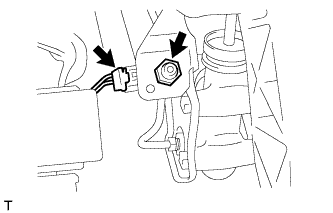
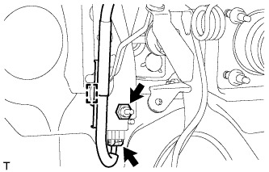

ПЕРЕКЛЮЧАТЕЛЬ ПЕДАЛИ СЦЕПЛЕНИЯ > СНЯТИЕ |
| 1. СНИМИТЕ ПУСКОВОЙ ПЕРЕКЛЮЧАТЕЛЬ МУФТЫ СЦЕПЛЕНИЯ В СБОРЕ |
|  |
Для моделей с левосторонним рулевым управлением:
Отсоедините разъем пускового переключателя муфты.
Отверните гайку и снимите пусковой переключатель муфты сцепления.
|  |
Для моделей с правосторонним рулевым управлением:
Отсоедините разъем пускового переключателя муфты сцепления и освободите зажим.
Отверните гайку и снимите пусковой переключатель муфты сцепления.